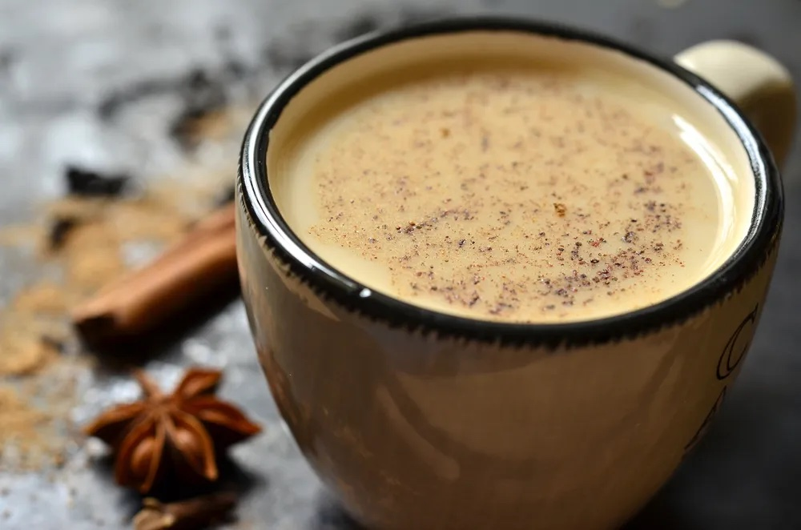

Chai

Description
Masala chai is a spiced, sweetened black tea mixed with milk. Originating from India, this drink has made its way to coffee shops all around the world.
Ingredients
- 1/2 tsp cardamom seeds or ground cardamom
- 1 piece cinnamon stick
- 4 peppercorns
- 1/4 tsp fennel seeds
- 2 cups whole milk
- 3 1/2 tbsp packed light brown sugar
- 1/2 tsp ground ginger
- 2 cups water
- 5 tsp loose orange pekoe tea
Steps
- Grind together cardamom, cinnamon stick, peppercorns, and fennel seeds with mortar and pestle or spice grinder.
- Bring milk to a simmer in a heavy saucepan. Stir or whisk in brown sugar, ground spice mixture, ginger, and 1/8 tsp salt, or to taste. Reduce heat to low and simmer gently, stirring occasionally, 3 minutes to infuse flavors.
- Meanwhile, bring water to a boil in a 1-quart saucepan, add tea, and boil 1 minute.
- Pour tea through sieve into hot milk mixture. Cook on low heat 1 minute. Stir before serving.